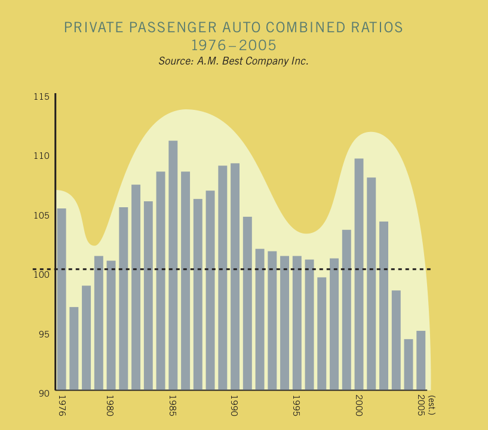
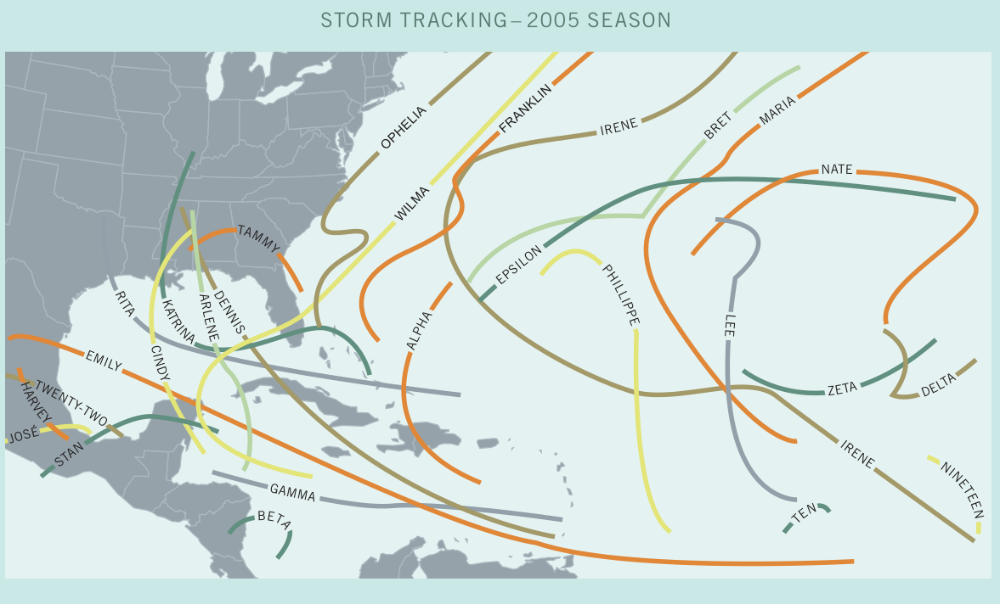

CEO Shareholder Letter
2005 Q4 Letter — Key Points Summary
- Profitability & Underwriting Performance — Calendar-year underwriting profit margin of 11.9%, well above the 4% target but down about 3 points from 2004; net income of $1.39 billion and return on average shareholders' equity of 25%.
- Premium Growth — Net premiums written of just over $14 billion, up approximately $630 million or 5% — the smallest gain in five years; industry-wide auto NPW estimated to grow only about 1% in 2005.
- Industry Cycle & Market Conditions — Management described the industry as at or past the peak of the underwriting cycle; structural frequency declines from vehicle safety and road design distinguish this cycle from prior ones.
- Capital Management & Financial Position — Variable annual dividend policy announced for 2007, replacing fixed quarterly dividends; formula ties dividend to 20% of after-tax underwriting profit multiplied by the Gainshare factor; 4:1 stock split expected in 2006.
- Claims Service & Innovation — Six new concierge centers opened in 2005 with 18 under construction; about 30 additional openings planned for 2006; management cited this initiative as the single most important sustained operational improvement of the last several years.
- Loss Costs & Severity Trends — Calendar-year favorable reserve development of 2.6 points for 2005; modestly increasing severity in physical damage coverages expected to gradually absorb excess margin rather than prompt immediate rate reductions.
- Technology & Digital Transformation — Internet business celebrated its 10th anniversary in 2005; policy management system replacement and new Colorado Springs data center are the two companywide technology initiatives for the next 18 months.
- Policies in Force & Customer Growth — Ended 2005 with close to 10 million policies; retention improvement lagged expectations again, prompting deeper granular analysis of customer experiences and introduction of internal employee-as-customer program.
- Brand Building & Marketing Strategy — 2005 was the first full year of the two-brand strategy; New Jersey entry highlighted the value of offering two top-ten national brands — Drive and Progressive Direct — to consumers.
- Rate Adequacy & Pricing Strategy — Drive reduced rates modestly but found it very hard to grow new applications; Direct kept rates relatively stable and grew applications, albeit slower than desired; management called for greater discipline in rate-reduction decisions.
MEASUREMENT IS CENTRAL TO PROGRESSIVE’S BUSINESS DISCIPLINE.
We find ways to measure just about everything. Crafting an accurate measure to summarize overall company performance is perhaps hardest of all, but we have such a measure.
“Gainshare” is our way to calibrate the business gain made in any calendar year. Expressed as a score between 0 and 2 with calculation details that belie the simplistic scale, Gainshare has for over 12 years provided an internal barometer of performance, as well as variable compensation for all Progressive people. In the bleak year of 2000, the score was 0 and no Gainsharing compensation was paid. In 2003, when things could not have gone much better, the score was the first ever 2.
While neither of these results was anticipated as likely in the distribution of outcomes, both served to validate the possibilities. Over the last 12 years, the average score has been 1.4, exceeding the expected outcome of achieving our stated objectives which by design would produce a 1.0.
Although 2005 was not a year of record setting growth rates or earnings per share, by our Gainshare score of 1.54, or by any other measure, it was a very solid all-around performance. We ended the year with just over $14 billion in net premiums written, an increase of about $630 million, or 5% over 2004. This is the smallest gain of the last five years in both absolute and percentage terms, but not out of sync with our expectations or our forecast of industry-wide auto premiums for 2005.
Our calendar-year underwriting profit margin remained exceptionally strong at 11.9%, considerably above our target of 4%, but down from prior-year levels by about 3 points. Combined with investment returns for the year, net income for 2005 was $1.39 billion, yielding a return on average shareholders’ equity of 25%.

Market Conditions
With some good reason, the cyclical nature of insurance is often cited when describing market conditions and industry performance. The inset graph provides a visual reference to the surprisingly consistent nature of the private passenger auto cycle. Over the past 30 years, we have seen enormous political and economic changes, along with dramatic swings in interest rates and equity-market returns. Despite these changes, the cycle shows a consistent pattern. It would appear that over the past few years, we have been observing the ascent, peak and now the potential decline in underwriting margins of the current cycle.
Last year I reported that consistently falling claims frequency made 2003 and 2004 two of only three profitable years in the last 25 for the auto insurance industry and that 2004 produced what was at that time perhaps the lowest industry-wide combined ratio in history. As most would have assumed, 2005 was to be another year of underwriting profitability and, while significant, even the losses from the storm season are unlikely to dramatically change the macro cycle.
For Progressive, understanding this cycle translates into playing the right hand at the right time.
About one full cycle ago, the industry was reporting peak underwriting profitability. In 1998, Progressive reported a healthy underwriting profit of 8.4%, but our growth was slowing. Our culture thrives on profitable growth, and slowing growth does not sit well at any level in the organization — now or then. We responded with price reductions in the hope of additional profitable growth.
These reductions, combined with an unanticipated increase in claim frequency and severity and a host of other contributing factors, decreased our underwriting profit to 1.7% in 1999 and led to an underwriting loss of 4.4% in 2000.
In our own small way we contributed to the cycle. As we review today’s market conditions there are reasons to respect the parallels to that time. We are more experienced, but imperfect, in valuing the benefit of rate reductions during market conditions in which consumers experience rate stability or decreases. As such, we have chosen to be more deliberate in using rate reductions in search of profitable growth. Drive Insurance, which operates in an environment where rates are continuously compared to competitive options, reduced rates modestly during the year and found it very hard to get growth in new applications. Progressive Direct kept rates relatively stable for the year and was able to grow new applications, albeit at a pace far less than we could have handled and would have preferred.
Change in market pricing is reflected in year-over-year growth in net premiums written for the auto insurance industry. In 2004, the year-over-year growth in net premiums written fell to 4.2% from the prior three-year average of 8%. For 2005, we estimate the year-over-year increase in net premiums written for the auto insurance industry will be about 1%. Our knowledge of the calculus combining price, growth and profit, while increasing, remains a challenge and something we want to be smart about.
Reviewing Progressive’s and the industry’s results through 2005 and noting the possible analogue to past cycles, we would make a few important observations. Operating margins, while historically strong, are starting to deteriorate. Modestly increasing severity, notably in physical damage coverages, combined with price reductions, will likely reduce current margins. Prior period bodily injury severities, which have the highest sensitivity to carried reserves, have generally been overestimated resulting in favorable calendar-period adjustments. In Progressive’s case, the overall favorable calendar-year adjustment was 2.6 points for 2005. Calendar-period reporting has a way of disguising the run rate and perhaps delaying appropriate reactions. We have for some time forecast that Progressive would slowly return to more normal operating margins by allowing expected increases in severity, and potentially frequency, to absorb the margin in excess of our target rather than immediately price it away. We continue to believe this is the right way for us to address these market conditions.
We see 2006 as a year when accident-year results both for Progressive and the industry may begin producing smaller margins and trending toward more historical norms. As with any outlook there are unknowns. The level of price activity and the degree of severity and frequency change will be critical as we play our hand during this phase of the cycle.
History has been an influential teacher and as we work through this phase of the cycle many things are different and, we think, better for us. Our personal auto policy periods are shorter, providing greater flexibility to price correctly and our controls and analytic review of profitability by subsegments of our book are more rigorous. We are clearer about our expected outcomes. Loss cost and expense management are all considerably tighter and our technology and operational performance are considerably improved.
While accepting that current market conditions will likely continue to influence our growth during 2006, and that growth will be less than we believe we are ready to handle, we have embraced this time and opportunity as one of “maximum preparedness” for the future we anticipate.
Maximum Preparedness
Underwriting cycle aside, our future will largely be determined by how we craft it, and we have many important initiatives that continue to excite me. A slightly less glamorous way to describe ourselves and our ability to compete would be to suggest we do three things well that really matter. We allocate costs between consumers in ways that best match their expected costs, we manage the claims and administrative costs that must ultimately be allocated, and we provide superior consumer experiences. Our maximum preparedness agenda is designed to encompass the many things we know matter in our business and to optimize our performance on a few very strategic initiatives that create meaningful and, in some cases, distinctive competitive advantages.
Claims
Our single largest cost and one of our most visible consumer experiences has continued to demonstrate steady and consistent improvement. Our emphasis on claims handling quality and critical review has again established a new high-water mark. While the rate of improvement, by definition, will slow, this is likely the single most important and sustained operational improvement of the last several years. Even more important perhaps is that our claims quality improved in growth periods suggesting, as we believe, claims quality is largely a function of system-wide process design and effective implementation. We expect when margins thin the competitive benefits will be more apparent.
Last year, I reported that we used the year to fully evaluate every aspect of our concierge-level claims service and concluded by year end that our evaluation discipline and planning had positioned us well for expansion throughout 2005 and 2006. We opened six new facilities in 2005 and ended the year with 18 under construction. 2006 will be a big year with about 30 planned openings. As passionate and involved as I have been with this initiative, I continue to be surprised and impressed by the level of detail and science our people have built around the concept, and just how critical that detail is to ensure success. My confidence in more than doubling the number of sites in just one year reflects that we are now observing that each opening builds on the success of those before it and has a much abbreviated learning curve. Several years ago I suggested that this initiative would change our business in profound ways, improving the customer and employee experience, reducing the friction costs associated with claims handling, improving the interaction with body shops and leveraging scale advantages in meaningful ways. I am now more confident than ever and we have started to think more in terms of how not to deprive our customers of this level of service where we can offer it economically.
A theme highlighted by this report is the significance and value of time in a service economy. More than anything else the concierge level of service respects our customers’ and claimants’ time and works effectively to minimize the cycle time of repairs, resulting in cost-management opportunities at every step of the process.
Speaking of time, our claims responsiveness was once again put to the test in what appeared to be the never-ending storm season of 2005. We have reported at length on the storms and their economic toll, but the real story is that, when tested, our claims organization’s ability to produce excellent closure rates and great customer service was, we believe, second to none. A by-product of a storm season of this year’s magnitude is that it is likely that more people than ever, in a concentrated period of time, have experienced an insurance claim of one type or another. We intend to confirm our understanding of our performance by conducting an independent survey of Gulf States claims handling. Determining where we have room for improvement will be the only assessment of long-term value. Timely response in this case is not just great customer service, it’s good business. Responding to customers quickly adds certainty to our external financial disclosures as well as to the internal data we use for pricing.

Marketing
2005 was the first full year operating with two distinct brand offerings. Providing consumers the choice of both an agent-distributed product, now sold as Drive® Insurance from Progressive, and a direct-to-consumer product, Progressive Direct SM, is both exciting and important positioning for us. Each brand presents distinct challenges in product design, pricing and competitive focus. The power of this choice and positioning was highlighted for me when we entered New Jersey in September and were able to announce the availability of two top-ten national brands, providing consumers with different and valid choices in how to buy their auto insurance. Significant opportunities exist for both brands to develop and improve but, with a year behind us, the opportunities are starting to be realized and we are encouraged by the potential.
A notable and welcomed development for Progressive Direct during the year was the continued strong growth from customers initiating and buying policies on the Internet. Our Web-based activities celebrated their ten-year anniversary in 2005 with some remarkable accomplishments, and as we look toward the next decade, we expect the changes to be equally profound.
We are pleased with, and very committed to, our positioning of Progressive relative to Internet consumers and see tremendous potential in everything we do to leverage our leadership further. The continuous enhancement of Internet features and capabilities in Agent and Direct quoting, customer service and claims management are all central to our preparedness plans.
Retention and Customer Service
Last year in this letter, I wrote that we are at our best when challenged and that improving retention is a challenge we have accepted. During a period in which price pressure appears to be a less significant reason for consumers to switch, our overall retention measures have not extended at a rate we might have expected. This has forced us to examine the customer experiences we provide at ever-increasing levels of granularity. We have not always liked what we’ve seen. Self diagnosis seems easy upon first blush, but to understand effectively the countless combinations of customer experiences makes the effort a significant commitment. In more cases than we would like, the cause of a less than perfect customer experience is what we have called “friendly fire.”
While we are proud of our overall service and experience delivery, we can do better. Friendly fire, as we have seen, can result from process breakdowns, poor quality control, actions that are generally applied that should be more targeted, failure to communicate as effectively as the situation deserves, and the like. We are using more finely tuned statistical process control tools, numerous cause analysis methods and a heightened attention to customer feedback in our efforts to take our customer care focus to a level consistent with our expectations. To increase the speed, completeness and intensity of our self analysis of customer experiences we have created a participation benefit for our employees to be both customers and critics. Eating our own cooking, combined with the Progressive culture to be “Virtually Perfect” in all we do, will unquestionably create some healthy tension, but I have little doubt having more Progressive people as Progressive customers will be an effective catalyst as we continue to improve our product offerings and consumer experiences.
Technology
Advancing our technology interface with agents and consumers and increasing internal functionality is a routine part of our individual business operations and is funded and managed as such. Our plans in each area are directed at long-term cost management and providing superior customer experiences. 2006 promises to be another productive year. To add to our ongoing preparedness, we have two companywide initiatives under way for which the next 18 months will be crucial. The first is replacing the customer and policy management system that has served us well but is not consistent with our views of future needs. The second is adding a data center that will ensure that not only is capacity not constrained but that a very high level of system availability and disaster preparedness is assured.
Investments and Capital Management
Solid growth in the economy and improving profits supported the equity markets in 2005 while “measured” interest rate increases from the Federal Reserve pushed short-term rates higher to essentially flat with steady longer maturity yields. We took advantage of interest rate volatility during the year to shorten our portfolio’s average maturity when rates were low and extend it when rates increased. We decreased our exposure to corporate and other non-government issued bonds early in the year, believing the incremental yield premium relative to U.S. treasury bonds was insufficient for the risk taken. Our portfolio produced a 4% total return in 2005 with equities tracking their benchmark and fixed-income securities performing better than the general bond market.
Our long-standing and continuing position on capital management is to repurchase shares when our capital position, view of the future, and the stock’s price make it attractive to do so. Growth rates and profitability levels during 2005 happily led to an assessment that we were accumulating capital in excess of that which we believed was needed and prudent to run the business. Committed to executing against our capital management strategy, we entered 2005 with regular monthly share repurchases. The average repurchase price per share in January was $83.46, below the $88 of the “Dutch auction” we had completed just three months earlier. By September our repurchase price was just under $100. October and November saw rapid escalation in the stock price peaking near $125; while delighted for shareholders, this level of volatility suggested we should pause for a while, which we did before repurchasing again in December at $118.92.
Use of Gainshare to Align Shareholder and Employee Interests
Progressive’s business model is designed to produce profitable growth over any reasonable period and support that growth from underwriting results. Based on our current market share and competitive positioning, we see no significant constraints to this outlook. Internally, our Gainsharing measure, focused exclusively on underwriting performance, provides a significant degree of self regulation to this objective. With this as a backdrop, we have challenged ourselves to develop a more comprehensive view of capital husbandry that is more aligned with our business model. The most significant change we plan to implement is to our dividend policy. In 2007, we will replace modest quarterly dividends with an annual variable dividend payable after the close of the year. The special dividend will, absent extraordinary circumstances, be declared by the Board based on a Board-selected target percentage of after-tax underwriting profit, multiplied by the companywide Gainshare factor. The target percentage will be declared prior to the start of the year and the Gainshare score, between 0 and 2, will be reported each month as it develops. This adds a significant dimension to our ability to return capital to shareholders in balance with performance and our expected future capital needs. In addition, it provides for an ownership proposition well aligned with companywide performance management incentives. We have stress tested this concept using a 20% target and actual Gainshare scores for the last decade and are convinced it produces the desired outcomes of returning capital to owners in periods in which we do not require additional capital and retaining capital when we can effectively deploy it in the business. Using 2005 performance as an example, the dividend payable in early 2006 would have been $1.66 per share versus $0.12 under the current dividend policy. While this change provides a means for a more consistent capital distribution when appropriate to do so, we are still committed to our repurchase activity as an important part of our immediate and long-term capital management. At a minimum, we will continue to neutralize dilution from equity-based compensation, in the year of issuance, through share repurchases. With this addition to our capital management tool set, we believe we will be much better suited to deal with the range of outcomes from our business model and create suitable flexibility for owners under varying tax environments.
We have for some time included in our Financial Policies that we will split the stock when the share price exceeds $100 for a reasonable period of time. We last split the stock 3:1 in April 2002. As I write this letter, we are approaching a time when both conditions have been met, and I expect our Board of Directors will vote on such an action during their meeting immediately following the Annual Meeting of Shareholders in April. We currently do not have enough authorized shares to provide significant flexibility in considering a range of split scenarios and have placed a request for increased authorization before the shareholders. We have attempted to study many factors to determine whether splitting the stock and having it trade in a price range more consistent with the market as a whole is an appropriate thing to do. Our work in this area is not definitive, but we are now less sure that forecasting parameters of any future split is important to our capital management philosophy. Therefore, we will remove that commitment from our Financial Policies going forward.
Constancy of Purpose
Just as measurement is central to Progressive’s business discipline, our Core Values, aspirations and people are central to our business culture.
We are continuously motivated by our aspiration of becoming Consumers’ #1 Choice for Auto Insurance and in 2005 moved another step closer, ending the year with close to 10 million policies and enormous potential. Nothing we have achieved has been without the efforts of so many and our single most important initiative continues to be making Progressive a Great Place to Work. Creating an environment where our people enjoy working hard, are motivated to do their best, can grow constantly and one that others want to join is a never-ending focus and has a special permanency.
Our measures of the culture and work environment provide us both confidence and challenge in our efforts to ensure the Progressive culture continuously matches our aspirations.
We greatly appreciate the customers we are privileged to serve, the more than 28,000 Progressive people who make it all possible, the agents and brokers who choose to represent us and shareholders who believe in what we are doing.
Glenn M. Renwick
President and Chief Executive Officer